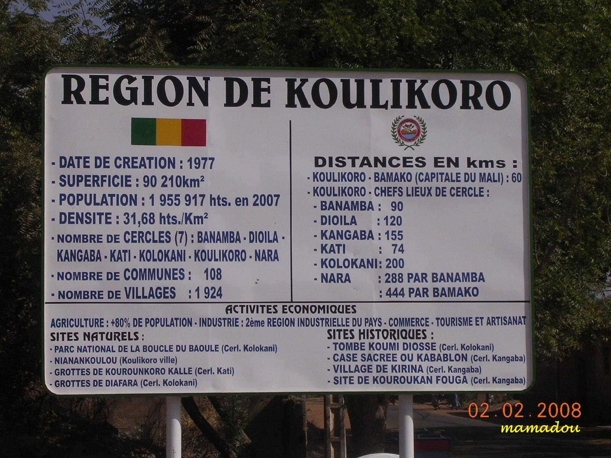

Koulikoro Region is a region in western Mali. It is the second administrative area of Mali and covers an area of 90,120 km2. Its capital is the city of Koulikoro..
History
The region of Koulikoro is the seat of several great empires which followed one another in Mali: the Ghana Empire, the Sosso Empire and the Mali Empire
Culture
The land of the Manding (or Mandé) is located in this area. It is the cradle of the Empire of Mali and known for preserving its traditional culture with its griots and its hunters. Like much of Mali, the area is strongly Islamized, but the practices of animists remain very present in the villages. Bambara serves as the area's most common language. Koulikoro is famous for its traditional puppet theater, showcased in many festivals such as in the village of Diarabougou. Several musicians are natives of the region, including Salif Keita and Rokia Traoré.
